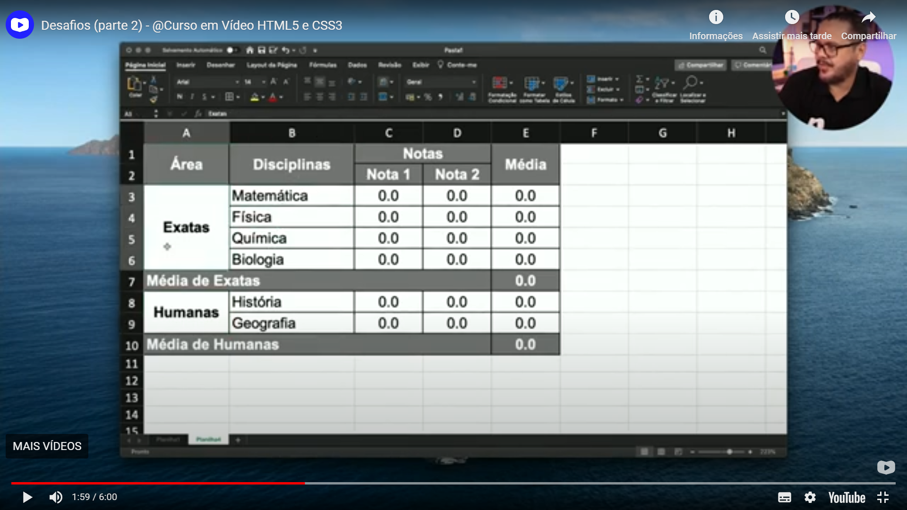

Neste desafio, eu tenho que reproduzir a tabela abaixo, respeitando as formatações e as tags semânticas.
Segue minha solução para o desafio:
| Área | Disciplinas | Notas | Média | |
|---|---|---|---|---|
| Nota 1 | Nota 2 | |||
| Exatas | Matemática | 0.0 | 0.0 | 0.0 |
| Física | 0.0 | 0.0 | 0.0 | |
| Química | 0.0 | 0.0 | 0.0 | |
| Biologia | 0.0 | 0.0 | 0.0 | |
| Média de Exatas | 0.0 | |||
| Humanas | História | 0.0 | 0.0 | 0.0 |
| Geografia | 0.0 | 0.0 | 0.0 | |
| Média de Humanas | 0.0 | |||